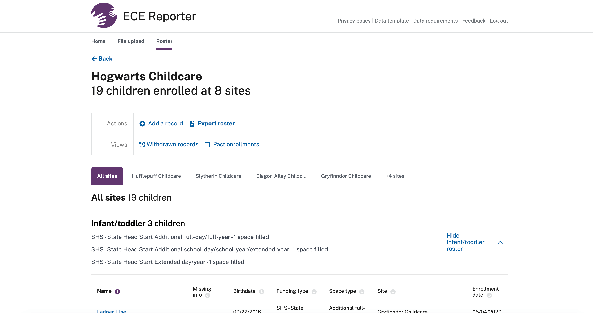

ECE Reporter Help
Help topics
December to July data collection guide
A step by step guide to prepare for OEC’s December to July data collection request.
Account and site management
How to request new accounts, modify existing accounts, or request changes to your site and organization information.
Data requirements
Find the Office of Early Childhood’s requirements for ECE Reporter. Includes which enrollments to enter, where to find data requirements and data collection timelines.
Working with child records
See how to add, edit, delete and withdraw child records. Includes how to add income determinations, as well as how change enrollment and funding information.
Using your roster
See how to find child records, see withdrawn enrollments and view rosters for previous months.
Need more support?
Contact the ECE Reporter team through this form.